00로봇 조립도
과 제 조 립 도 면 | |||
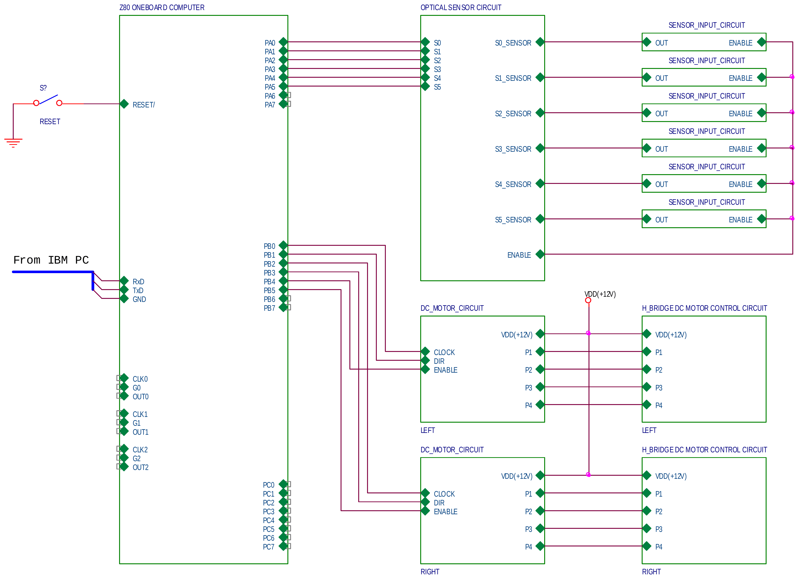 | |||
과제명 | 라인 마이크로 로봇 제작하기 | 척 도 | N·S |
도면번호 | 1-1 | ||
과 제 조 립 도 면 | |||
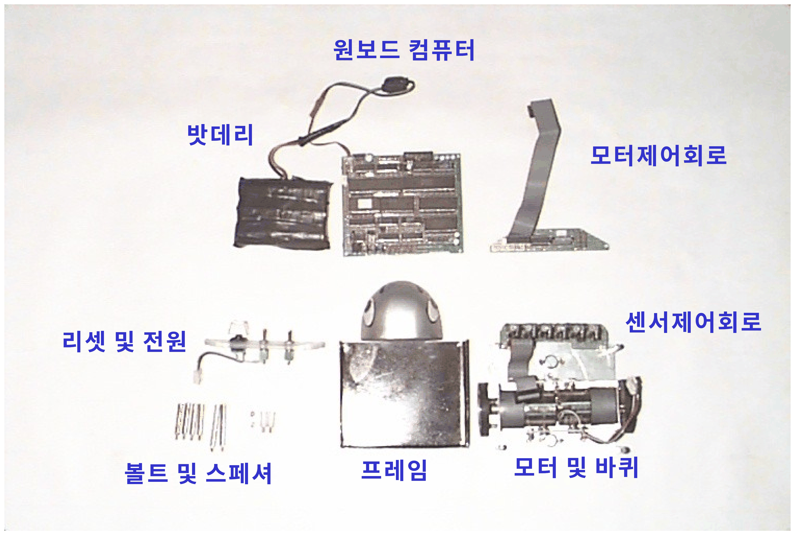 | |||
과제명 | 라인 마이크로 로봇 제작하기 | 척 도 | N·S |
도면번호 | 1-2 | ||
과 제 조 립 도 면 | |||
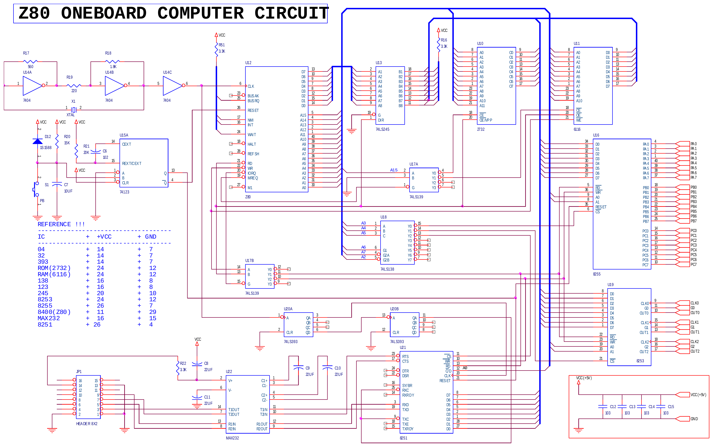 | |||
과제명 | Z80 - 원보드 컴퓨터 제작하기 | 척 도 | N·S |
도면번호 | 2-1 | ||
과 제 조 립 도 면 | |||
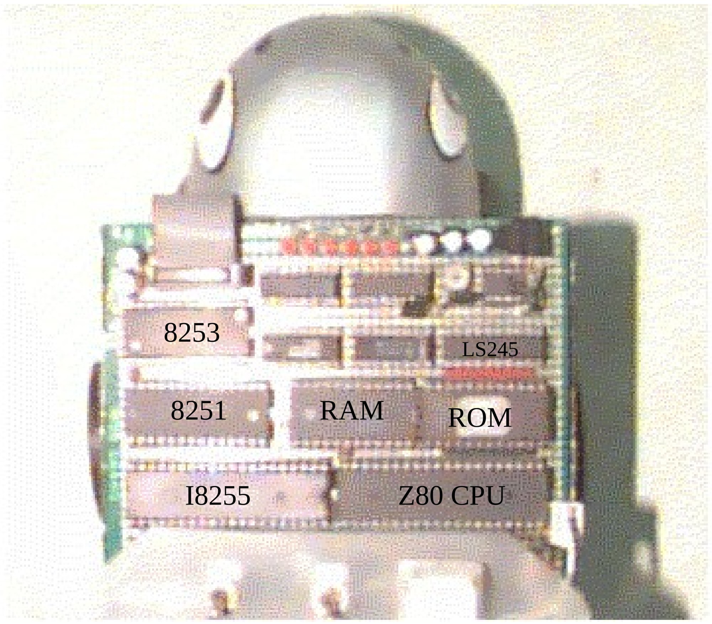 | |||
과제명 | Z80 - 원보드 컴퓨터 제작하기 | 척 도 | N·S |
도면번호 | 2-2 | ||
과 제 조 립 도 면 | |||
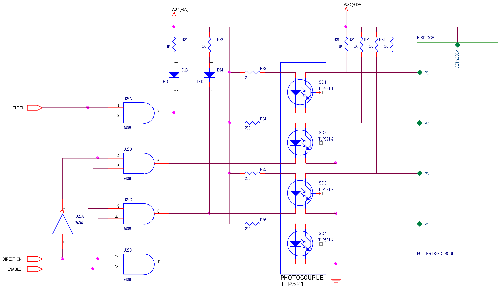 | |||
과제명 | DC 모터 제어 회로 제작하기 | 척 도 | N·S |
도면번호 | 3-1 | ||
과 제 조 립 도 면 | |||
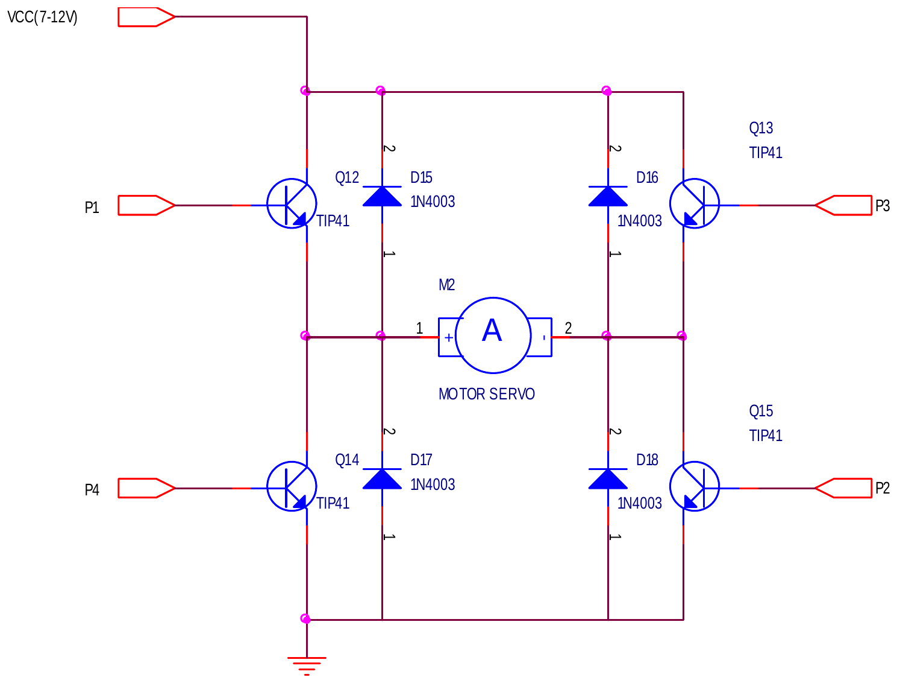 | |||
과제명 | DC 모터 제어회로 제작하기 | 척 도 | N·S |
도면번호 | 3-2 | ||
과 제 조 립 도 면 | |||
 | |||
과제명 | DC 모터 제어회로 제작하기 | 척 도 | N·S |
도면번호 | 3-3 | ||
과 제 조 립 도 면 | |||
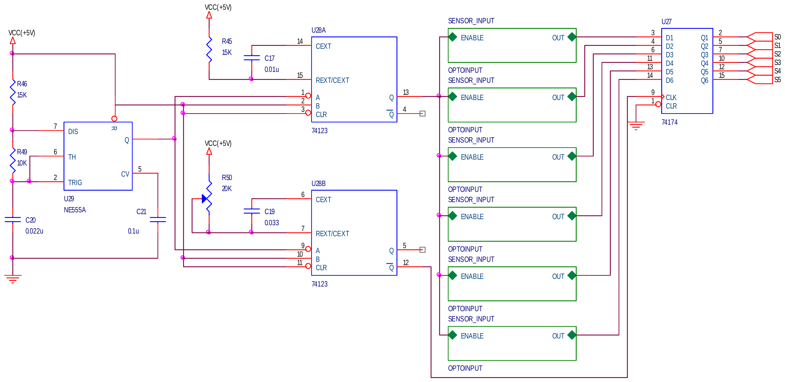 | |||
과제명 | 센서 신호 검출 회로 제작하기 | 척 도 | N·S |
도면번호 | 4-1 | ||
과 제 조 립 도 면 | |||
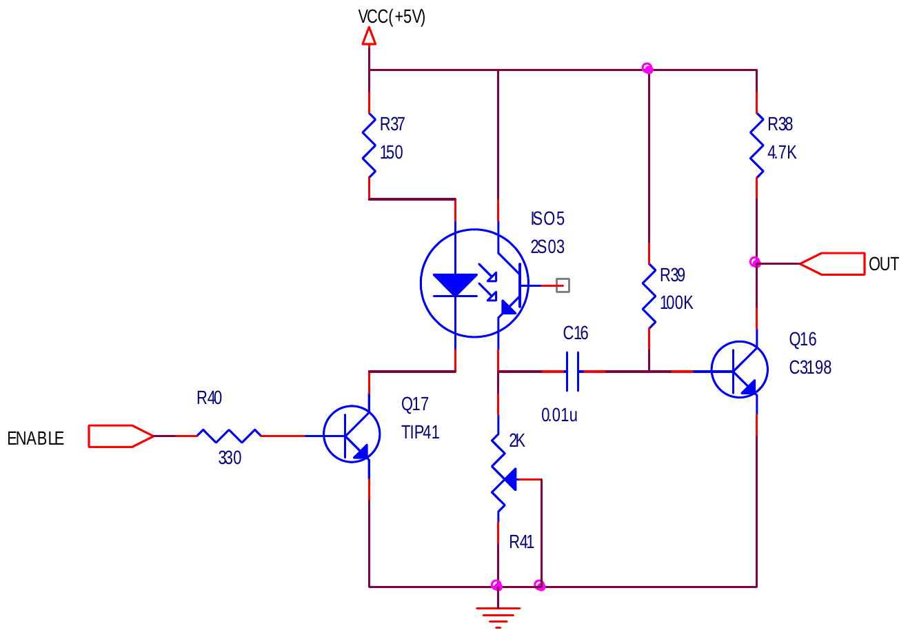 | |||
과제명 | 센서 신호 검출 회로 제작하기 | 척 도 | N·S |
도면번호 | 4-2 | ||
과 제 조 립 도 면 | |||
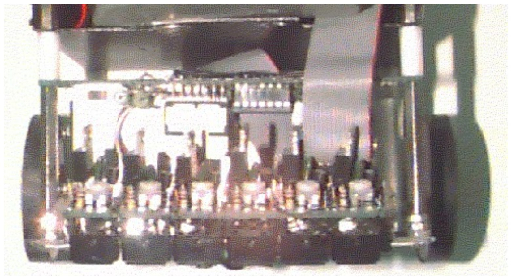 | |||
과제명 | 센서 신호 검출 회로 제작하기 | 척 도 | N·S |
도면번호 | 4-3 | ||
과 제 조 립 도 면 | |||
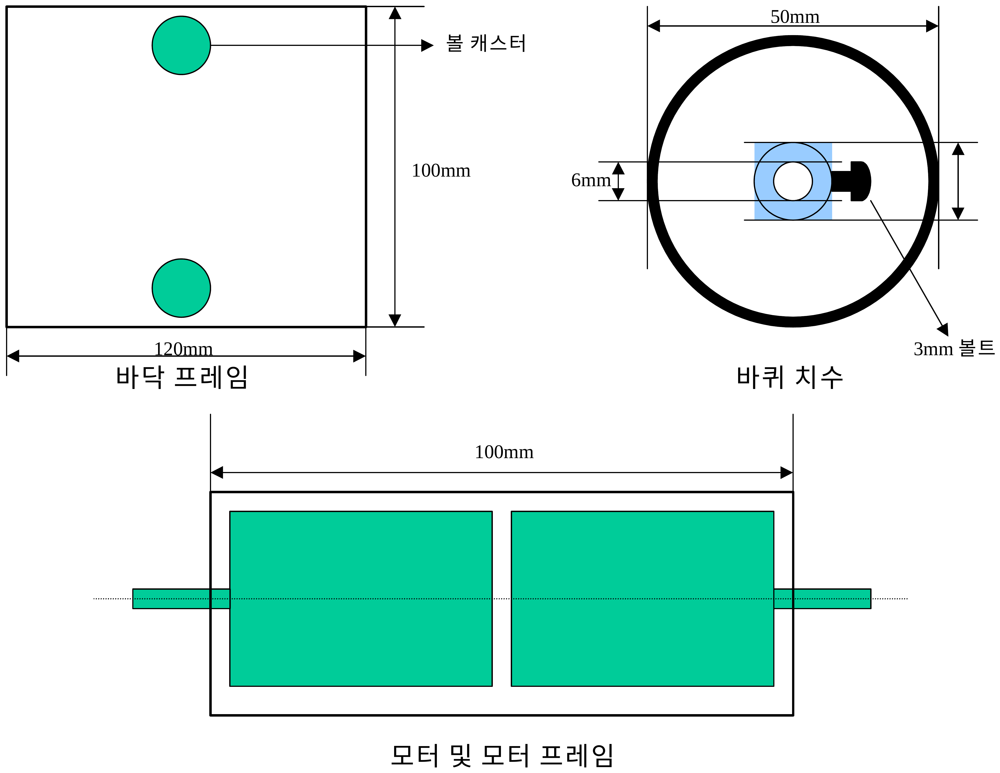 | |||
과제명 | 프레임 및 바퀴 제작하기 | 척 도 | N·S |
도면번호 | 5-1 | ||
01과제계획서
과 제 계 획 서 | |||||||||||||||
과제명 | 라인 마이크로 로봇 제작하기 | 직종 | 전기계측제어 | ||||||||||||
소요시간 | 이론: 80H 실기: 200H | ||||||||||||||
과제번호 | 부품개수 | 3 | 적용학기 | 3/4 | 적용주차 | ∼ | |||||||||
1.과제의유형 | 개별부품□조립품■기기/설비□기타 | ||||||||||||||
2. 학습목표 | 가. 마이크로프로세서 개념과 컴퓨터 시스템 구성을 이해하여 제어용 원보드 컴퓨터를 제작하고 주변 센서회로와 모터 제어 회로를 구성한 후 라인 마이크로 로봇을 제작할 수 있다. 나. 제작된 로봇의 지능을 부여하기 위하여 어셈블리어나 제어용 C-프로그램을 이용하여 프로그램을 작성할 수 있다. | ||||||||||||||
3. 작업 분담 | 과제명 | 도면 번호 | 소요 시간 | 학습형태 | |||||||||||
단독 | 그룹내 단독 | 그룹 공동 | |||||||||||||
원보드 컴퓨터 제작하기 | 70H | ■ | |||||||||||||
DC 모터 제어회로 제작하기 | 30H | ■ | |||||||||||||
센서 신호 검출 회로 제작하기 | 30H | ■ | |||||||||||||
프레임제작하기 | 20H | ■ | |||||||||||||
라인마이크로로봇제작 및 프로그램작성 | 50H | ■ | |||||||||||||
4. 준비할 학습자료 | ○도면: 조립도 및 그림 ○학습안내교재: 프로젝트지도서 ○전공서적: 마이크로프로세서이론, 마이크로프로세서실기, Z80마이크로프로세서, C-프로그램 기초 ○시청각매체: CBT코스웨어, Presentation sheet, TP, 모형 및 실물, 슬라이드 | ||||||||||||||
5. 목표하는 핵심적자질 심화단계 | 촉진해야 할 핵심적 자질의 주요요소 | 초급 단계 | 적용 단계 | 응용 단계 | 문제 해걸 단계 | ||||||||||
Ⅰ. 과제수행능력(계획·수행·평가) | |||||||||||||||
Ⅱ. 의사소통 및 협동(분임토의·발표력·팀워크) | |||||||||||||||
Ⅲ. 정보파악 및 학습자료 활용능력 | |||||||||||||||
Ⅳ. 자주성과 책임감 | |||||||||||||||
Ⅴ. 난관극복능력(문제해결력, 인내력) | |||||||||||||||
Ⅵ. 응용력과 창의력 | |||||||||||||||
6. 새로운 관련지식 | |||||
교과목 | 단원 | 교 수 내 용 | 시수 | 학습실 | 담당 교사 |
전자계산기 | Z 80-C P U 및 프로그래밍 | 컴퓨터의 구조 | 10H | ||
컴퓨터 인터페이스 | 10H | ||||
Z80 CPU 내부구조 및 명령어 | 20H | ||||
어셈블리어 프로그래밍 | 20H | ||||
센서 | 센서 | 센서활용 | 10H | ||
제어용기기 | 제어용 모터 및 제어 | 제어용 전동기 | 5H | ||
모터 제어 방법 | 5H | ||||
계 | 80H | ||||
7. 새로운 기술·기능 | |||||
부품명 (작업명) | 교과목 | 교 수 내 용 (작 업 요 소) | 시수 | 학습실 | 담당 교사 |
Z80 원보드 컴퓨터 제작하기 | 전자계산기 | Z80 리셋회로 | 2H | ||
클럭 발진 회로 | 3H | ||||
디코더 회로 | 5H | ||||
메모리 | 10H | ||||
I/O 장치 | 20H | ||||
커넥터 연결방법 | 4H | ||||
인터페이스 회로 구성 및 전원회로 | 6H | ||||
센서신호 검출회로 제작하기 | 센서 | 디지털 논리 회로 | 8H | ||
TR 스위칭 회로 | 8H | ||||
발진 회로 | 8H | ||||
센서 필터 | 6H | ||||
모터제어 하기 | 전력 전자 | 서보 모터 제어 | 15H | ||
PID 제어 | 15H | ||||
디지털 논리 회로 | 5H | ||||
TR 스위칭 회로 | 5H | ||||
인버터 | 10H | ||||
제어 프로그램 작성하기 | 전자계산기 | Z80 어셈블러 사용법 | 4H | ||
에디터 및 디버깅하기 | 6H | ||||
통신 프로그램 사용법 및 제어 | 20H | ||||
제어 프로그램 명령어 | 20H | ||||
프레임 및 바퀴 제작 | 금속가공 기초 | 모터 프레임 및 바퀴제작 | 20H | ||
계 | 200H | ||||
02훈련·지도 방법적 절차계획
공 과 : 자동제어과 반 : | 훈련 - 지도방법적절차계획 | 담당교사: 주차: |
과제명 : 라인마이크로로봇제작하기 | ||
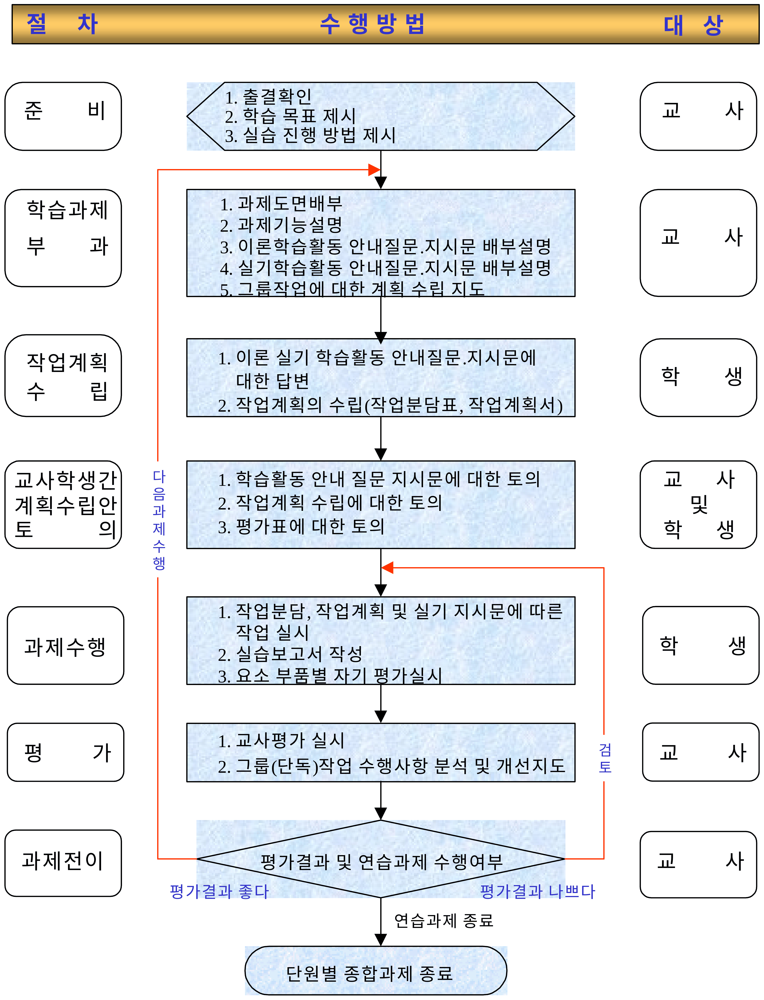 | ||
03과제 기능(동작) 설명서
공 과 : 반 : | 과제기능(동작)설명서 | 그룹: 날짜: |
과제명 : 라인 마이크로 로봇 제작하기 | ||
1. 제작 방법 라인 마이크로 로봇을 제작하는 방법은 가. 실기 학습 활동 안내 질문, 지시문과 과제 기능 설명서의 요구사항을 만족하도록 회로도를 보고 팬턴도를 작성한 후 질문사항에 답한다. 나. 주어진 부품을 기판에 배치 및 삽입 납땜 등을 하고 견고하게 제작한다. 다. 제작된 작품은 실험 방법에 의해서 동작 실험을 하고 오동작 작품은 수리하여 완전동작이 되도록 한다. 라. 제작된 작품을 자기 평가하고, 지도교사와 같이 동작 확인 및 평가를 받는다. 마. 각각의 과제를 종합하여 종합 작품으로 조립하고 로봇을 제작한다. 바. 과제 수행시 문제시 되는 것은 조별 토의 및 협동을 통하여 해결하도록 하고 보고서로 제출한다. 2. 구성요소 및 동작사항 가. 원보드 컴퓨터 Z80 원보드 컴퓨터는 크게 3가지 부분으로 나누어진다. 중앙처리장치, 메모리, I/O장치등으로 구성되어 있고 중앙처리장치에서 논리 연산 및 처리를 하게되고 메모리에서는 코드 및 저장된 데이터에 따라 적절히 처리하고 I/O장치는 병렬 입출력 및 직렬 입출력등을 수행하게 된다. 나. DC 모터 제어회로 DC 모터 제어회로는 풀브릿지 직류 모터 제어회로를 사용하여 정역 및 스피드 컨트롤이 가능하게 하였고 스피드 컨트롤은 프로그램 방식에 의한 PWM 방식에 의해서 제어하게 된다. 정역회로는 논리회로에 의해서 가능하게 하였으며 인터페이스는 포터 커플러를 이용하여 모터 잡음을 억제하였다. 다. 센서 신호 검출회로 우선 멀티 바이브레이터에 의해서 광량센서를 시간주기로 인에이블 시켜 과도한 전류를 순간적으로 흘려 동작시키는 방식으로 센서에서 신호를 검출하고 검출횐 신호는 고역 필터에 의해서 외란광의 영향을 없게 하였으며 D-FF으로 래치 시킨후 검퓨터의 입력으로 내보낸다. | ||
공 과 : 반 : | 과제기능(동작)설명서 | 그룹: 날짜: |
과제명 : Z80 원보드 컴퓨터 제작 | ||
1. 기능 외부 기기를 제어하고자 할 때 일반적인 IBM PC가 아닌 제어용 소형 컴퓨터가 필요하고, 컴퓨터의 기본 구성요소인 CPU 및 메모리 와 IBM PC와 데이터 통신을 하기 위하여 시리얼 포트 및 입출력 병렬 포토 및 타이머등을 구성하여 외부장치를 제어할 수 있는 장치이다. 2. 회로 동작 설명 회로는 자일로그사의 Z80 CPU로 8비트 데이터와 16비트 어드레스 라인을 갖고 있기 때문에 8비트 프로세서이고 64Kbyte의 메모리 용량으로 제어용 프로세서로 사용된다. 또한 주변 소자는 3채널의 8비트 병렬 포트 및 3채널의 타이머, 1채널의 시리얼 포트로 구성하였는데 시리얼 포트는 9600BPS로 통신하기 위하여 분주회로를 구성하여 크리스탈에서 발생된 주파수 클럭을 분주하였으며 MAX232 IC를 사용하여 12V와 5V 전원 레벨을 인터페이스 하기 위하여 쓰인다. 또한 메모리는 EPROM과 S-RAM을 사용하였으며 Z80 CPU의 리셋시 프로그램 카운터의 값을 고려하여 0H번지에 EPROM을 배치시켰다. 메모리 맵핑은 디코더 IC를 사용한다. 또한 타이머와 병렬 I/O 포트는 8253과 8255 IC인 인텔계열 페리페럴 소자를 사용하였으며 확장을 용이하게 하기 위하여 디코더 IC를 사용한다. 디코더 IC는 74LS139 및 74LS138을 사용하였는데 일반적인 조합회로를 사용하여 게이트 수를 증가하는 것을 간단하게 하였다. 8255는 인텔 계열 CPU주변소자로 병렬 8비트 입출력 소자인데 3개의 포트를 가지고 있으며 모드설정에 따라 다르게 사용할 수도 있다. 마이크로 로봇에서 사용되어지는 입력은 센서입력 및 출력입력, 모드지정등 9개이며 출력은 모터제어 출력으로 6개가 사용되어 입출력은 15개가 사용되어 진다. 8253은 타이머 소자로 프로그램을 작성할 때 소프트웨어적으로 펄스를 발생시키거나 시간을 설정하기 위해서 추가하였으며 다양하게 소프트웨어를 작성하기 위해서 추가하였다. | ||
공 과 : 반 : | 과제기능(동작)설명서 | 그룹: 날짜: | |||||||||||||||
과제명 : DC 모터 제어회로 제작 | |||||||||||||||||
1. 기능 로봇에서 구성요소에서 손과 발에 해당하는 부분으로 로봇을 전,후진 시키며 좌회전, 우회전등을 시킬 수 있는데 DC 모터를 이용하여 구동되어 진다. DC 모터의 정역제어는 H 브릿지 DC 모터제어를 사용하고, 논리회로를 이용하여 구동 제어회로를 구성하였다. 또한 PWM 펄스를 컴퓨터에서 발생하여 공급하도록 한다. 2. 회로 동작 설명 입력은 PWM신호 입력과 방향제어 입력, 이네블 신호로 구성되어 7408과 7404 논리회로에 의해서 아래 데이터에 값에 의해 진리값이 결정되고 포터 커플러를 스위칭하여 H-브릿지 모터 제어 회로에 의해 모터를 정역 제어 한다. 이때 P1과 P3가 "H"이고, P2와 P4가 "L"이면 모터는 정회전하고 P1과 P3가 "L"이고, P2와 P4가 "H"이면 모터는 역회전한다. | |||||||||||||||||
모터 데이터 값 | |||||||||||||||||
EN | DIR | CK | 08-3 | 08-6 | 08-8 | 08-11 | P1 | P2 | P3 | P4 | 모터 방향 | ||||||
0 | 0 | 0 | 0 | 0 | 0 | 0 | L | L | L | L | |||||||
0 | 0 | 1 | 1 | 0 | 0 | 0 | H | L | L | L | |||||||
0 | 1 | 0 | 0 | 0 | 0 | 0 | L | L | L | L | |||||||
0 | 1 | 1 | 0 | 0 | 1 | 0 | L | L | H | L | |||||||
1 | 0 | 0 | 0 | 1 | 0 | 0 | L | H | L | L | |||||||
1 | 0 | 1 | 1 | 1 | 0 | 0 | H | H | L | L | CW | ||||||
1 | 1 | 0 | 0 | 0 | 0 | 1 | L | L | L | H | |||||||
1 | 1 | 1 | 0 | 0 | 1 | 1 | L | L | H | H | CCW | ||||||
공 과 : 반 : | 과제기능(동작)설명서 | 그룹: 날짜: |
과제명 : 센서신호 검출회로 제작 | ||
1. 기능 로봇에서 감각 기관중 눈에 해당하는 부분으로 라인의 경계를 검출하여 현재 로봇의 상태를 알려주기 위해서 센서를 이용하여 라인 검출 회로를 구성한다. 센서신호는 원보드 컴퓨터에 연결되어 프로그램에 의해서 로봇의 위치를 판정할 수 있다. 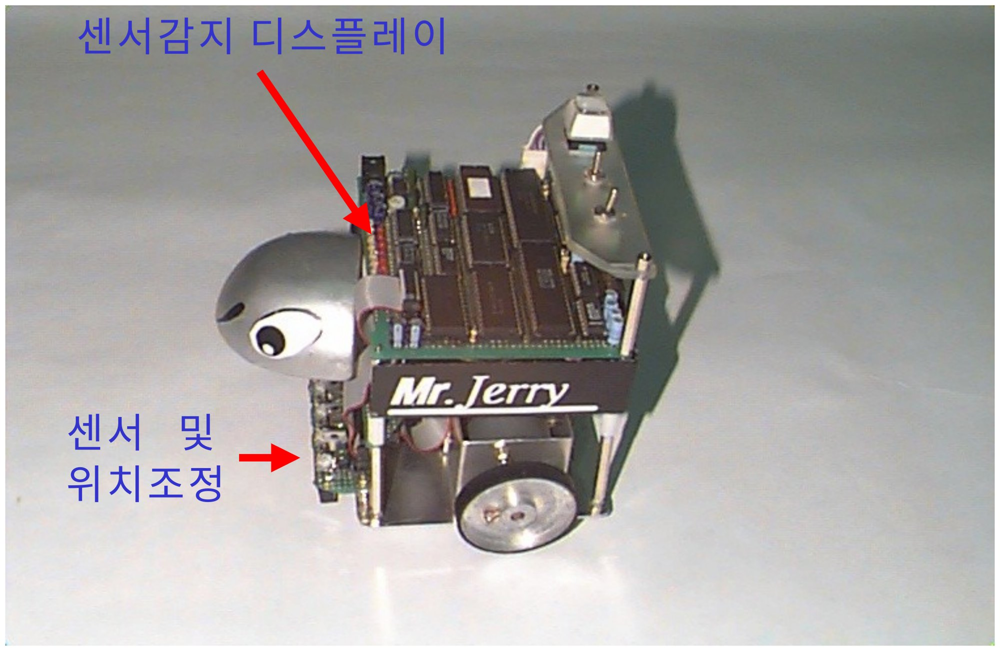 | ||
2. 회로 동작 설명
광량 센서를 제어하는 방법은 다양하게 있으나 그 중에서 가장 합당하게 선정하는 것이 펄스 방식에 의한 제어이다. 펄스 방식에 의해서 왜란에 의한 영향을 최소화시킬 수 있게 때문이다.
펄스 신호는 타이머 IC인 NE555 IC를 사용하여 타이밍을 만들어 주고 74LS123 IC를 사용하여 광센서를 제어하는 부분과 D-FF를 동작 시키는 펄스 입력으로 사용하여 신호가 있을때에는 포터 커플 센서에 의해서 검출하고 하이패스 필터를 통해 검출된 신호를 D-FF으로 신호를 유지 시킨다.
NE555 IC는 비안정 멀티 바이브레이터로 구동되어 지는데 펄스는 저항과 콘덴서의 시정수에 의해 발진 주파수가 결정되어 진다.
광센서를 제어하는 부분은 NE555 IC 출력이 입력되면 하강 에지 부분에서 74LS123 단안정 멀티 바이브레이터로 동작하여 T=RC시정수에 의해서 일정시간동안 "H"가 되어 광센서를 구동시키고 광센서에서 빛을 내보내고 수신부에서 검출되면 하이패스 필터에 의해서 검출된 신호를 D-FF의 입력으로 보내게 된다.
D-FF의 클럭은 74LS123 단안정 멀티 바이브레이터에 의해서 클럭 타이밍을 결정하여 D-FF의 입력을 출력으로 로드시킨다.
04작업분담표
공과: 반: | 작 업 분 담 | 그룹명: | 날짜: | |
지도교사: | 학기: | |||
전공: | 과제명: 라인마이크로로봇 제작하기 | 도면번호: | ||
성명 | 작업내용 | 예상소요시간 | 실소요시간 | |
05재료 목록
재 료 목 록
<과제명:Z80 원보드 컴퓨터 제작하기>
번호 | 품명 | 규격 | 단위 | 수량 | 비고 |
1 | IC | Z80 | EA | 1 | |
2 | IC | 8255 | EA | 1 | |
3 | IC | 8251 | EA | 1 | |
4 | IC | 2764 | EA | 1 | |
5 | IC | 6264 | EA | 1 | |
6 | IC | 74LS245 | EA | 1 | |
7 | IC | 8253 | EA | 1 | |
8 | IC | MAX232 | EA | 1 | |
9 | IC | 74138 | EA | 1 | |
10 | IC | 74139 | EA | 1 | |
11 | IC | 74393 | EA | 1 | |
12 | IC | 74123 | EA | 1 | |
13 | IC | 7404 | EA | 1 | |
14 | IC소켓 | 40핀 | EA | 2 | |
15 | IC소켓 | 28핀 | EA | 4 | |
16 | IC소켓 | 16핀 | EA | 3 | |
17 | IC소켓 | 14핀 | EA | 2 | |
18 | 저항 | 1.8㏀ | EA | 1 | |
19 | 저항 | 3.3㏀ | EA | 3 | |
20 | 저항 | 15㏀ | EA | 1 | |
21 | 저항 | 20㏀ | EA | 1 | |
22 | 저항 | 560Ω | EA | 1 | |
23 | 저항 | 220Ω | EA | 1 | |
24 | 전해 콘덴서 | 10㎌/16v | EA | 1 | 내압16v이상 |
25 | 전해 콘덴서 | 22㎌/16v | EA | 4 | 내압16v이상 |
26 | 콘덴서 | 0.01㎌/16v | EA | 13 | 내압16v이상 |
27 | 콘덴서 | 0.001㎌/16v | EA | 1 | 내압16v이상 |
28 | HEADER | 8X2 | EA | 1 | |
29 | 푸시버튼 | EA | 1 | ||
30 | 누름버튼 | EA | 1 | 전원용 | |
31 | 다이오드 | IN4001 | EA | 1 | |
32 | 크리스탈 | 11.0592㎒ | EA | 1 |
재 료 목 록
<DC모터 제어 회로 제작하기>
번호 | 품명 | 규격 | 단위 | 수량 | 비고 |
1 | IC | 7404 | EA | 1 | |
2 | IC | 7408 | EA | 2 | |
3 | 포토 커플러 | TLP521-4 | EA | 2 | |
4 | IC소켓 | 14핀 | EA | 3 | |
5 | IC소켓 | 16핀 | EA | 2 | |
6 | 저항 | 1㏀ | EA | 12 | |
7 | 저항 | 200Ω | EA | 8 | |
8 | 트랜지스터 | TIP41 | EA | 8 | (NPN형) |
9 | 다이오드 | IN4001 | EA | 8 | |
10 | LED | 적색 | EA | 2 | |
11 | LED | 녹색 | EA | 2 | |
재 료 목 록
<과제명:센서 검출 회로 제작하기>
번호 | 품명 | 규격 | 단위 | 수량 | 비고 |
1 | IC | NE555 | EA | 1 | |
2 | IC | 74HC123 | EA | 1 | |
3 | IC | 74174 | EA | 1 | |
4 | IC소켓 | 8핀 | EA | 1 | |
5 | IC소켓 | 16핀 | EA | 2 | |
6 | 저항 | 15㏀ | EA | 2 | |
7 | 저항 | 100㏀ | EA | 1 | |
8 | 저항 | 4.7㏀ | EA | 4 | |
9 | 저항 | 100㏀ | EA | 4 | |
10 | 저항 | 150Ω | EA | 4 | |
11 | 저항 | 330Ω | EA | 8 | |
12 | 가변저항 | 20㏀ | EA | 1 | |
13 | 가변저항 | 2㏀ | EA | 4 | |
14 | 콘덴서 | 0.022㎌/16V | EA | 1 | |
15 | 콘덴서 | 0.1㎌/16V | EA | 1 | |
16 | 콘덴서 | 0.01㎌/16V | EA | 5 | |
17 | 콘덴서 | 0.033㎌/16V | EA | 1 | |
18 | 트랜지스터 | TIP41 | EA | 4 | |
19 | 트랜지스터 | C3198 | EA | 4 | |
20 | LED | 적색 | EA | 4 | |
21 | 적외선센서 | S052S03 | EA | 4 | |
재 료 목 록
<과제명:프레임 및 바퀴 제작하기>
번호 | 품명 | 규격 | 단위 | 수량 | 비고 |
1 | 케이블 | 32P | M | 1 | |
2 | 커넥터 | 16핀 | EA | 1 | |
3 | 아크릴 | 5T*150*100 | 장 | 1 | |
4 | 스페셔 | 10mm | EA | 8 | |
5 | " | 30mm | EA | 12 | |
6 | 너트 | 3mm | EA | 16 | |
7 | 연선 | 10색 | M | 1 | |
8 | 알루미늄 환봉 | 70mm*30mm | EA | 2 | |
9 | 알루미늄판 | 0.8T*300*300 | 장 | 1 | |
10 | " | 2T*150*150 | 장 | 1 | |
11 | DC 모터 | 5W 12V | EA | 2 | |
재료 목록
<과제명:8051제작하기(초음파센서)>
번호 | 품명 | 규격 | 단위 | 수량 | 비고 |
1 | IC | LM324 | EA | 1 | |
2 | IC | 7400 | EA | 1 | |
3 | IC | 4069 | EA | 1 | |
4 | IC | 74HC123 | EA | 1 | |
5 | IC소켓 | 16핀 | EA | 1 | |
6 | IC소켓 | 14핀 | EA | 3 | |
7 | 초음파센서 | REC/SEND | EA | 2 | |
8 | 저항 | 1㏀ | EA | 3 | |
9 | 저항 | 1㏁ | EA | 1 | |
10 | 저항 | 4.7㏀ | EA | 3 | |
11 | 저항 | 100㏀ | EA | 1 | |
12 | 저항 | 10㏀ | EA | 2 | |
13 | 저항 | 500Ω | EA | 1 | |
14 | 저항 | 47㏀ | EA | 1 | |
15 | 가변저항 | 10㏀ | EA | 2 | |
16 | 콘덴서 | 100㎊/16V | EA | 1 | 내압16v이상 |
17 | 콘덴서 | 0.001㎌/16V | EA | 1 | 내압16v이상 |
18 | 콘덴서 | 0.1㎌/16V | EA | 1 | 내압16v이상 |
19 | 콘덴서 | 0.18㎌/16V | EA | 1 | 내압16v이상 |
20 | 콘덴서 | 0.047㎌/16V | EA | 1 | 내압16v이상 |
21 | 다이오드 | IN4001 | EA | 3 | |
22 | 트랜지스터 | C3198 | EA | 1 | |
재료 목록
<과제명 :8051제작하기(원보드)>
번호 | 품명 | 규격 | 단위 | 수량 | 비고 |
1 | IC | 8051 | EA | 1 | |
2 | IC | 82C55 | EA | 1 | |
3 | IC | 2764 | EA | 1 | |
4 | IC | 6264 | EA | 1 | |
5 | IC | 74LS373 | EA | 1 | |
6 | IC | 74138 | EA | 2 | |
7 | IC | 7400 | EA | 1 | |
8 | IC | MAX232 | EA | 1 | |
9 | IC | 7805 | EA | 1 | |
10 | IC소겟 | 20핀 | EA | 1 | |
11 | IC소겟 | 28핀 | EA | 2 | |
12 | IC소겟 | 16핀 | EA | 3 | |
13 | IC소겟 | 14핀 | EA | 1 | |
14 | IC소겟 | 40핀 | EA | 2 | |
15 | 푸시버튼 | EA | 3 | ||
16 | 누름버튼 | EA | 1 | 전원용 | |
17 | 저항 | 4.7㏀ | EA | 3 | |
18 | 저항 | 3.3㏀ | EA | 2 | |
19 | 저항 | 330Ω | EA | 1 | |
20 | 전해콘덴서 | 470㎌/16V | EA | 2 | 내압16v이상 |
21 | 전해콘덴서 | 22㎌/16V | EA | 4 | 내압16v이상 |
22 | 콘덴서 | 0.1㎌/16V | EA | 1 | 내압16v이상 |
23 | 콘덴서 | 20㎊/16V | EA | 2 | 내압16v이상 |
24 | 콘덴서 | 0.01㎌/16V | EA | 9 | 내압16v이상 |
25 | LED | 적색 | EA | 1 | |
26 | 크리스탈 | 11.0592㎒ | EA | 1 | |
27 | HEADER | 8X2 | EA | 3 | |
재료 목록
<과제명:z80제작하기(z80)>
번호 | 품명 | 규격 | 단위 | 수량 | 비고 |
1 | IC | Z80 | EA | 1 | |
2 | IC | 8255 | EA | 1 | |
3 | IC | 8251 | EA | 1 | |
4 | IC | 2764 | EA | 1 | |
5 | IC | 6264 | EA | 1 | |
6 | IC | 74LS245 | EA | 1 | |
7 | IC | 8253 | EA | 1 | |
8 | IC | MAX232 | EA | 1 | |
9 | IC | 74138 | EA | 1 | |
10 | IC | 74139 | EA | 1 | |
11 | IC | 74393 | EA | 1 | |
12 | IC | 74123 | EA | 1 | |
13 | IC | 7404 | EA | 1 | |
14 | IC소켓 | 40핀 | EA | 2 | |
15 | IC소켓 | 28핀 | EA | 4 | |
16 | IC소켓 | 16핀 | EA | 3 | |
17 | IC소켓 | 14핀 | EA | 2 | |
18 | 저항 | 1.8㏀ | EA | 1 | |
19 | 저항 | 3.3㏀ | EA | 3 | |
20 | 저항 | 15㏀ | EA | 1 | |
21 | 저항 | 20㏀ | EA | 1 | |
22 | 저항 | 560Ω | EA | 1 | |
23 | 저항 | 220Ω | EA | 1 | |
24 | 전해 콘덴서 | 10㎌/16v | EA | 1 | 내압16v이상 |
25 | 전해 콘덴서 | 22㎌/16v | EA | 4 | 내압16v이상 |
26 | 콘덴서 | 0.01㎌/16v | EA | 13 | 내압16v이상 |
27 | 콘덴서 | 0.001㎌/16v | EA | 1 | 내압16v이상 |
28 | HEADER | 8X2 | EA | 1 | |
29 | 푸시버튼 | EA | 1 | ||
30 | 누름버튼 | EA | 1 | 전원용 | |
31 | 다이오드 | IN4001 | EA | 1 | |
32 | 크리스탈 | 11.0592㎒ | EA | 1 | |